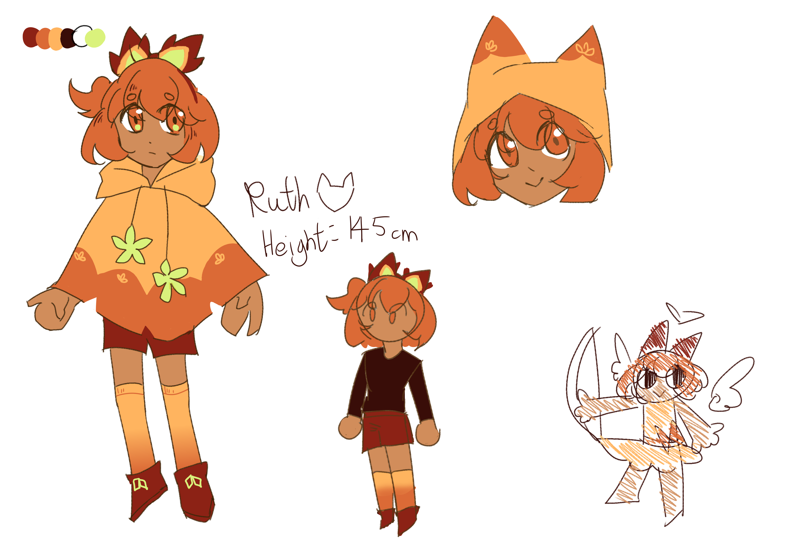

Hey hey, can you teach me magic?

Lore facts:
- When she was born, nobody found or took care of her. Luckily, with her ability, animals around her came to raise her
- The animals who took care of her are different in multiple time periods in her life, but the one she remembers the most if a fox.
- She enjoys doing art stuff, she even drew herself a sona, who is a fox-cupid magical girl with Soul Magic.
- Her sona is inspired by a certain mythological character with the same Magic type
- The ability Animal Whisperer can control animals and Cometlings, which means Cosmos can be affected as well
Meta facts:
- She is created slightly later than Grey and Claire.
- My idea for her is that her magic might seem kinda harmless and cute, but can be overpowered when used correctly
- She used to have a ton of lore, I forgot all of it due to an incident